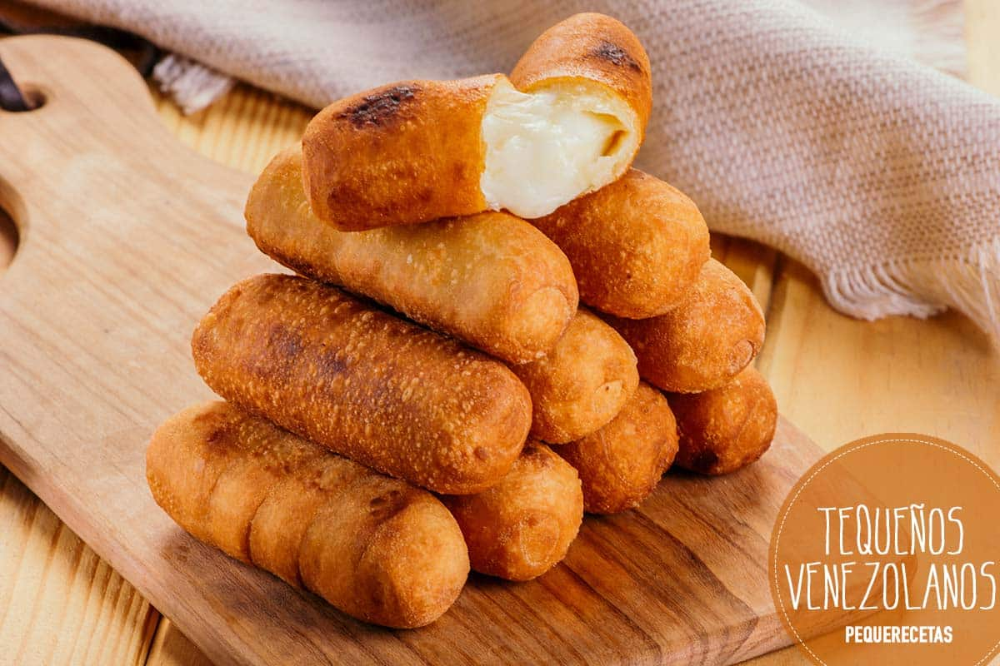

Frituras

Tequenos
El tequeño es un palito de queso empanizado frito o una lanza de masa de pan con queso blanco relleno en el medio, y es una comida o merienda popular en Venezuela.

Pasteles
La fritura es un tipo de cocción seca, en la cual el alimento se somete a una inmersión rápida en un baño de grasa o aceite a temperaturas altas.